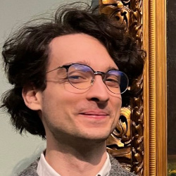
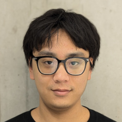
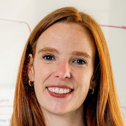

Workshop co-located with EACL 2026 in Morocco
Introduction
Large language models are undeniably reshaping language technology. Yet as models claim to "support X languages," the research community still lacks clear answers to core questions, such as What does multilinguality really mean, and how should we evaluate it? Simple counts of supported languages or translated benchmarks surely aren't enough. Multilingual evaluation today suffers from duplicated efforts, inconsistent practices, limited comparability across works, and general poor understanding of theoretical and practical problems. This workshop aims to bring the community together to address these challenges through three goals:- Create a dedicated venue for multilingual evaluation, data, and methodology.
- Advance and standardize evaluation practices to improve accuracy, scalability, and fairness.
- Integrate cultural and social perspectives into multilingual evaluation.
Call for Papers
We welcome archival (published in ACL Anthology) and non-archival submissions resulting in poster presentations for accepted papers. The topics include but are not limited to:- Evaluation resources beyond English or Western-centric perspectives and materials
- Annotation methodology and procedures
- Evaluation protocols: ranking vs direct assessment, rubric-based vs reference-based vs reference-free, prompt variations, etc
- Complex tasks: multimodality, fairness, long I/O, tool using, code-switching, literary, etc;
- Sociocultural and cognitive variation affecting the use and evaluation across languages;
- Scalable evaluation of cultural and factual knowledge;
- Efficient evaluation of a massive number of languages and tasks;
- Metrics, LLM judges, and reward models;
- Standardised reporting, and scientific comparison of multilingual performance;
- AI-assisted evaluation: data, methods, metrics, and standards;
- Other position, application-, or theory-focused contributions
Program
Please observe the following key dates, AoE:- Call for papers: October 15 2025
- Direct submission deadline: December 19 2025
- ARR submission deadline: January 2 2026
- Notification of acceptance: January 23 2026
- Camera-ready deadline: February 3 2026
- Workshop dates: March 24-29 2026 (TBD)
Organization
The workshop organizers are: Pinzhen Chen
Pinzhen ChenUniversity of Edinburgh Vilém Zouhar
ETH Zurich Hanxu Hu
University of Zurich
 Simran Khanuja
Simran KhanujaCMU
 Wenhao Zhu
Wenhao ZhuByteDance
 Barry Haddow
Barry HaddowUniversity of Edinburgh Alexandra Birch
University of Edinburgh
 Alham Fikri Aji
Alham Fikri AjiMBZUAI Rico Sennrich
University of Zurich Sara Hooker
Cohere Labs
Please reach out to mme-workshop@googlegroups.com with any questions or inquiries. This workshop follows ACL's Anti-Harassment Policy.